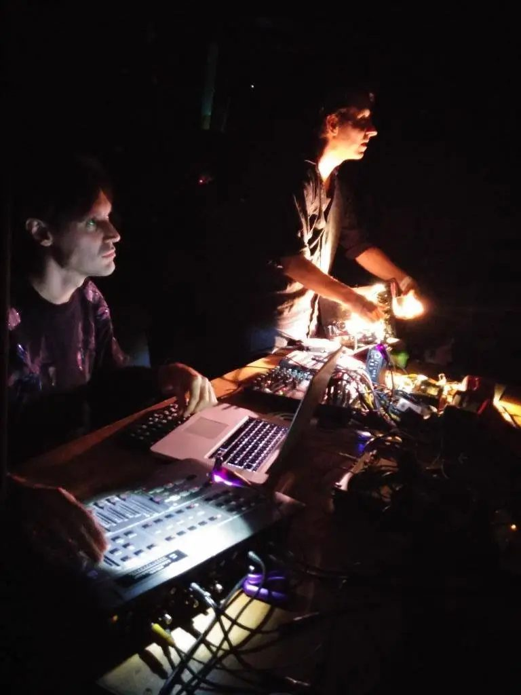
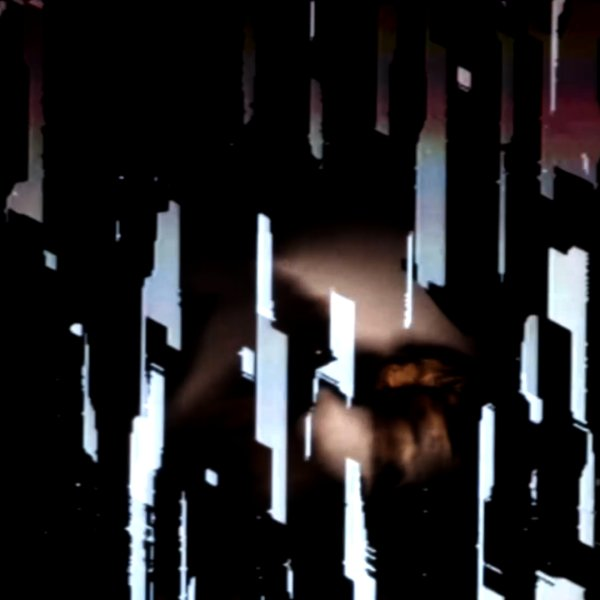
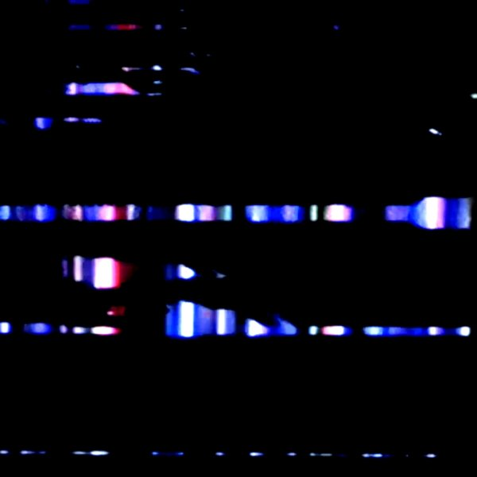
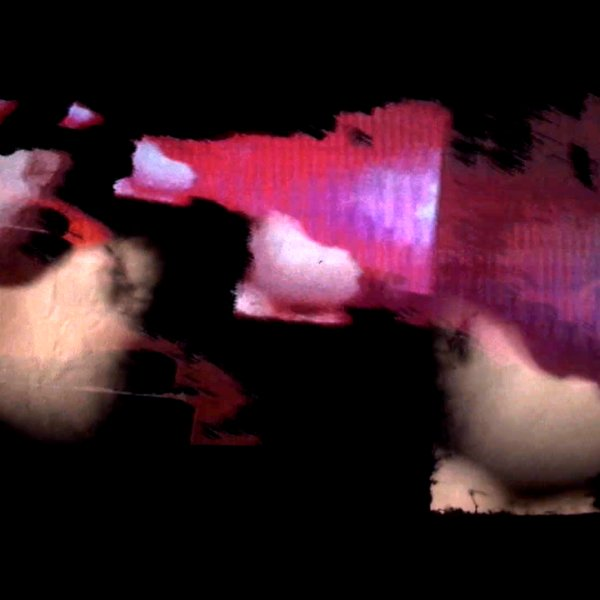
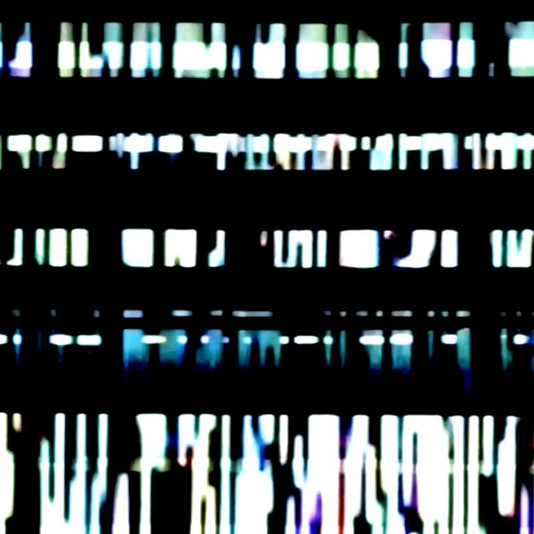

Secret Shots
An exploration of expired formats, searching for sense between the frames. Kris Limbach’s Super 8 manipulations mutate with Scott Sinclair’s video glitchery into a cinematic document that exists neither on tape nor in data.
Shown at IFFR Sound//Vision Rotterdam, Sala El Águila Madrid, Geyger Art Gallery and Grund Berlin




